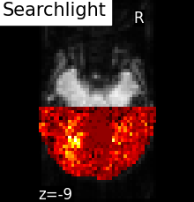
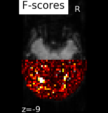

Note
Click here to download the full example code or to run this example in your browser via Binder
9.3.8. Searchlight analysis of face vs house recognition¶
Searchlight analysis requires fitting a classifier a large amount of times. As a result, it is an intrinsically slow method. In order to speed up computing, in this example, Searchlight is run only on one slice on the fMRI (see the generated figures).
9.3.8.1. Load Haxby dataset¶
import pandas as pd
from nilearn import datasets
from nilearn.image import new_img_like, load_img, get_data
# We fetch 2nd subject from haxby datasets (which is default)
haxby_dataset = datasets.fetch_haxby()
# print basic information on the dataset
print('Anatomical nifti image (3D) is located at: %s' % haxby_dataset.mask)
print('Functional nifti image (4D) is located at: %s' % haxby_dataset.func[0])
fmri_filename = haxby_dataset.func[0]
labels = pd.read_csv(haxby_dataset.session_target[0], sep=" ")
y = labels['labels']
session = labels['chunks']
Out:
Anatomical nifti image (3D) is located at: /home/nicolas/nilearn_data/haxby2001/mask.nii.gz
Functional nifti image (4D) is located at: /home/nicolas/nilearn_data/haxby2001/subj2/bold.nii.gz
9.3.8.2. Restrict to faces and houses¶
from nilearn.image import index_img
condition_mask = y.isin(['face', 'house'])
fmri_img = index_img(fmri_filename, condition_mask)
y, session = y[condition_mask], session[condition_mask]
9.3.8.3. Prepare masks¶
mask_img is the original mask
process_mask_img is a subset of mask_img, it contains the voxels that should be processed (we only keep the slice z = 26 and the back of the brain to speed up computation)
import numpy as np
mask_img = load_img(haxby_dataset.mask)
# .astype() makes a copy.
process_mask = get_data(mask_img).astype(np.int)
picked_slice = 29
process_mask[..., (picked_slice + 1):] = 0
process_mask[..., :picked_slice] = 0
process_mask[:, 30:] = 0
process_mask_img = new_img_like(mask_img, process_mask)
Out:
/home/nicolas/GitRepos/nilearn-fork/examples/02_decoding/plot_haxby_searchlight.py:52: DeprecationWarning: `np.int` is a deprecated alias for the builtin `int`. To silence this warning, use `int` by itself. Doing this will not modify any behavior and is safe. When replacing `np.int`, you may wish to use e.g. `np.int64` or `np.int32` to specify the precision. If you wish to review your current use, check the release note link for additional information.
Deprecated in NumPy 1.20; for more details and guidance: https://numpy.org/devdocs/release/1.20.0-notes.html#deprecations
process_mask = get_data(mask_img).astype(np.int)
9.3.8.4. Searchlight computation¶
# Make processing parallel
# /!\ As each thread will print its progress, n_jobs > 1 could mess up the
# information output.
n_jobs = 1
# Define the cross-validation scheme used for validation.
# Here we use a KFold cross-validation on the session, which corresponds to
# splitting the samples in 4 folds and make 4 runs using each fold as a test
# set once and the others as learning sets
from sklearn.model_selection import KFold
cv = KFold(n_splits=4)
import nilearn.decoding
# The radius is the one of the Searchlight sphere that will scan the volume
searchlight = nilearn.decoding.SearchLight(
mask_img,
process_mask_img=process_mask_img,
radius=5.6, n_jobs=n_jobs,
verbose=1, cv=cv)
searchlight.fit(fmri_img, y)
Out:
[Parallel(n_jobs=1)]: Using backend SequentialBackend with 1 concurrent workers.
Job #1, processed 0/739 voxels (0.00%, 288 seconds remaining)
Job #1, processed 10/739 voxels (1.35%, 26 seconds remaining)
Job #1, processed 20/739 voxels (2.71%, 25 seconds remaining)
Job #1, processed 30/739 voxels (4.06%, 25 seconds remaining)
Job #1, processed 40/739 voxels (5.41%, 25 seconds remaining)
Job #1, processed 50/739 voxels (6.77%, 25 seconds remaining)
Job #1, processed 60/739 voxels (8.12%, 25 seconds remaining)
Job #1, processed 70/739 voxels (9.47%, 25 seconds remaining)
Job #1, processed 80/739 voxels (10.83%, 25 seconds remaining)
Job #1, processed 90/739 voxels (12.18%, 25 seconds remaining)
Job #1, processed 100/739 voxels (13.53%, 25 seconds remaining)
Job #1, processed 110/739 voxels (14.88%, 24 seconds remaining)
Job #1, processed 120/739 voxels (16.24%, 24 seconds remaining)
Job #1, processed 130/739 voxels (17.59%, 24 seconds remaining)
Job #1, processed 140/739 voxels (18.94%, 23 seconds remaining)
Job #1, processed 150/739 voxels (20.30%, 23 seconds remaining)
Job #1, processed 160/739 voxels (21.65%, 22 seconds remaining)
Job #1, processed 170/739 voxels (23.00%, 22 seconds remaining)
Job #1, processed 180/739 voxels (24.36%, 22 seconds remaining)
Job #1, processed 190/739 voxels (25.71%, 21 seconds remaining)
Job #1, processed 200/739 voxels (27.06%, 21 seconds remaining)
Job #1, processed 210/739 voxels (28.42%, 20 seconds remaining)
Job #1, processed 220/739 voxels (29.77%, 20 seconds remaining)
Job #1, processed 230/739 voxels (31.12%, 20 seconds remaining)
Job #1, processed 240/739 voxels (32.48%, 19 seconds remaining)
Job #1, processed 250/739 voxels (33.83%, 19 seconds remaining)
Job #1, processed 260/739 voxels (35.18%, 18 seconds remaining)
Job #1, processed 270/739 voxels (36.54%, 18 seconds remaining)
Job #1, processed 280/739 voxels (37.89%, 18 seconds remaining)
Job #1, processed 290/739 voxels (39.24%, 17 seconds remaining)
Job #1, processed 300/739 voxels (40.60%, 17 seconds remaining)
Job #1, processed 310/739 voxels (41.95%, 16 seconds remaining)
Job #1, processed 320/739 voxels (43.30%, 16 seconds remaining)
Job #1, processed 330/739 voxels (44.65%, 16 seconds remaining)
Job #1, processed 340/739 voxels (46.01%, 15 seconds remaining)
Job #1, processed 350/739 voxels (47.36%, 15 seconds remaining)
Job #1, processed 360/739 voxels (48.71%, 14 seconds remaining)
Job #1, processed 370/739 voxels (50.07%, 14 seconds remaining)
Job #1, processed 380/739 voxels (51.42%, 14 seconds remaining)
Job #1, processed 390/739 voxels (52.77%, 13 seconds remaining)
Job #1, processed 400/739 voxels (54.13%, 13 seconds remaining)
Job #1, processed 410/739 voxels (55.48%, 13 seconds remaining)
Job #1, processed 420/739 voxels (56.83%, 12 seconds remaining)
Job #1, processed 430/739 voxels (58.19%, 12 seconds remaining)
Job #1, processed 440/739 voxels (59.54%, 11 seconds remaining)
Job #1, processed 450/739 voxels (60.89%, 11 seconds remaining)
Job #1, processed 460/739 voxels (62.25%, 11 seconds remaining)
Job #1, processed 470/739 voxels (63.60%, 10 seconds remaining)
Job #1, processed 480/739 voxels (64.95%, 10 seconds remaining)
Job #1, processed 490/739 voxels (66.31%, 9 seconds remaining)
Job #1, processed 500/739 voxels (67.66%, 9 seconds remaining)
Job #1, processed 510/739 voxels (69.01%, 9 seconds remaining)
Job #1, processed 520/739 voxels (70.37%, 8 seconds remaining)
Job #1, processed 530/739 voxels (71.72%, 8 seconds remaining)
Job #1, processed 540/739 voxels (73.07%, 7 seconds remaining)
Job #1, processed 550/739 voxels (74.42%, 7 seconds remaining)
Job #1, processed 560/739 voxels (75.78%, 7 seconds remaining)
Job #1, processed 570/739 voxels (77.13%, 6 seconds remaining)
Job #1, processed 580/739 voxels (78.48%, 6 seconds remaining)
Job #1, processed 590/739 voxels (79.84%, 5 seconds remaining)
Job #1, processed 600/739 voxels (81.19%, 5 seconds remaining)
Job #1, processed 610/739 voxels (82.54%, 5 seconds remaining)
Job #1, processed 620/739 voxels (83.90%, 4 seconds remaining)
Job #1, processed 630/739 voxels (85.25%, 4 seconds remaining)
Job #1, processed 640/739 voxels (86.60%, 3 seconds remaining)
Job #1, processed 650/739 voxels (87.96%, 3 seconds remaining)
Job #1, processed 660/739 voxels (89.31%, 3 seconds remaining)
Job #1, processed 670/739 voxels (90.66%, 2 seconds remaining)
Job #1, processed 680/739 voxels (92.02%, 2 seconds remaining)
Job #1, processed 690/739 voxels (93.37%, 1 seconds remaining)
Job #1, processed 700/739 voxels (94.72%, 1 seconds remaining)
Job #1, processed 710/739 voxels (96.08%, 1 seconds remaining)
Job #1, processed 720/739 voxels (97.43%, 0 seconds remaining)
Job #1, processed 730/739 voxels (98.78%, 0 seconds remaining)
[Parallel(n_jobs=1)]: Done 1 out of 1 | elapsed: 29.0s finished
SearchLight(cv=KFold(n_splits=4, random_state=None, shuffle=False),
mask_img=<nibabel.nifti1.Nifti1Image object at 0x7effef929610>,
process_mask_img=<nibabel.nifti1.Nifti1Image object at 0x7effef929070>,
radius=5.6, verbose=1)
9.3.8.5. F-scores computation¶
from nilearn.input_data import NiftiMasker
# For decoding, standardizing is often very important
nifti_masker = NiftiMasker(mask_img=mask_img, sessions=session,
standardize=True, memory='nilearn_cache',
memory_level=1)
fmri_masked = nifti_masker.fit_transform(fmri_img)
from sklearn.feature_selection import f_classif
f_values, p_values = f_classif(fmri_masked, y)
p_values = -np.log10(p_values)
p_values[p_values > 10] = 10
p_unmasked = get_data(nifti_masker.inverse_transform(p_values))
Out:
/home/nicolas/GitRepos/nilearn-fork/nilearn/_utils/helpers.py:145: FutureWarning: The parameter "sessions" will be removed in 0.9.0 release of Nilearn. Please use the parameter "runs" instead.
return func(*args, **kwargs)
9.3.8.6. Visualization¶
Use the fmri mean image as a surrogate of anatomical data
from nilearn import image
mean_fmri = image.mean_img(fmri_img)
from nilearn.plotting import plot_stat_map, plot_img, show
searchlight_img = new_img_like(mean_fmri, searchlight.scores_)
# Because scores are not a zero-center test statistics, we cannot use
# plot_stat_map
plot_img(searchlight_img, bg_img=mean_fmri,
title="Searchlight", display_mode="z", cut_coords=[-9],
vmin=.42, cmap='hot', threshold=.2, black_bg=True)
# F_score results
p_ma = np.ma.array(p_unmasked, mask=np.logical_not(process_mask))
f_score_img = new_img_like(mean_fmri, p_ma)
plot_stat_map(f_score_img, mean_fmri,
title="F-scores", display_mode="z",
cut_coords=[-9],
colorbar=False)
show()
- 
- 
Total running time of the script: ( 0 minutes 38.592 seconds)